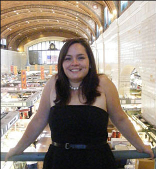

|
Alexa Gabillard is a student in the Master of Entertainment Industry Management program at Heinz College. She is from Paris, France and is passionate about indie films. Her favorite directors include Pedro Almodovar, Jacques Audiard, and David Lynch. |
Janessa Jackson is a senior at the University of Pittsburgh studying Communications and Film. She originally hails from Washington, D.C. but has learned to love the city of Pittsburgh as her own. The character Benjamin Button once said, "Your life is defined by opportunities, even the ones you miss" and she is a thorough believer. |
|  | Brittany Schultz is from Cleveland and she began to get interested in international film when she first went to the Cleveland International Film Festival, and she's been hooked ever since. She is currently a MA in Literary and Cultural Studies and she is focusing on film adaptations from novels and plays. She would love to either have a career as a professor or as a writer and somehow incorporate traveling into her career. |
 |
Over the past few years Caitlin Cawley has been quite a migrant herself, but no matter where she's called her gypsyhome, she always tries to embrace the local cultural offerings. In Bethlehem, Pennsylvania, she attended Beerfest, Musikfest, Celticfest... (She drank beer and ate fried food outdoors.); in Barcelona she talked of ¡Revolución! with rat-tailed gentlemen 'til sunrise over unfiltered lucky strikes; and on a typical Saturday in Williamsburg, Brooklyn she'd ride her bike to a vegan, organic, fair-trade brunch and ironically sip PBRs at a gallery opening by night. So upon moving to Pittsburgh, she was thrilled to have the opportunity to work on the International Film Festival--certainly one of Pittsburgh's great cultural events. And while she still needs to make it to a Steelers game, she is grateful to be a part of this incredible festival, in particular, the screenings of Neukölln Unlimited and My Marlon and Brando! |
 |
Neil Lobo is a grad student at the Heinz College. When not stuck in classes, he can be found learning American sports, reading Chuck Palahniuk, and Ballroom dancing. |
Sara Faradji is a sophomore Global Studies major at Carnegie Mellon. She is currently a research intern for Conflict Kitchen, a takeout restaurant designed to facilitate first-person discussion of the international culture and politics of countries with whom the United States is in conflict. Furthermore, she is collaborating on a short film project with Jóvenes Sin Nombre (Youths Without Names), a progressive youth movement dedicated to familiarizing the public with the rich complexities of Latino culture and borderland issues. In addition to facilitating the participation of Jóvenes Sin Nombre in the film festival, she is helping to coordinate the featured presentation of the Latin American films. |
Benjamin Welmond is a junior art student at Carnegie Mellon focused in film and animation. He likes sailing and making movies. |
Nicole Shero is currently working as a programming assistant at the Kelly Strayhorn Theater. When not putting on fabulous events for KST, she is probably volunteering or performing community outreach as a Public Ally. When she catches a brief break to breathe, she enjoys a good alliteration, a knitting project, and a strong cup of coffee. This is Nicole's second festival and she's excited to be bringing Plato's Academy to Pittsburgh. |
Allison Moore is a Los Angeles native, but has good taste in film. Currently working on her Masters in Literary and Cultural Studies at Carnegie Mellon, she is also a painter whose work has been exhibited in New York and Las Angeles. She enjoys critical theory, travel, and eating kimchi. |
 |
Originally from Shanghai, China, Hanlu Zhang came to the States two years ago in search for a multiple-cultural experience. She is a Pitt senior studying art history and film, and also a filmmaker and photographer herself. Hanlu is particularly enthralled by universal humanity and sensibility, and moments when these aspects meet the cinema. And that is the occasion with Dooman River, one of the films to be shown during the festival. |
Cynthia Tam is a recent graduate of the University of Pittsburgh who studied both art history and psychology with hopes of understanding the human desire to create, and how people engage with and respond to these creations. The CMU International Film Festival will be a great opportunity to see these interests in action on the screen and in the audience. In the meantime, she enjoys good music, tea, metaphors, the clever, observational humor of Dmitri Martin, and when she gets the chance, going home to New Jersey to spend time with her family. |
Paige Bathersfield is a Global Studies certificate student at the University of Pittsburgh. She is the daughter of Jamaican and Guyanese immigrants. She first became interested in International film while taking a film course on a study abroad trip to Buenos Aires, Argentina, Cape Town, South Africa and Beijing, China. One of her favorite films is La Historia Oficial by Argentine film director Luis Puenzo. Furthermore, she teaches Latino immigrants the English language in the D.C. metropolitan area. She is very excited to be assisting with the 2011 Carnegie Mellon International Film Festival! |